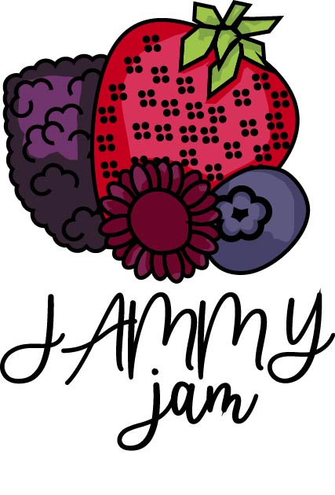

Jammy Jam
Proyecto de identidad visual para una marca de mermeladas y miel tradicional. El objetivo fue transmitir una sensación dulce, artesanal y natural, tomando como base frutas representativas como la fresa, zarzamora y frambuesa.
El proceso inició con la exploración de formas como el tarro de mermelada, evolucionando hacia una representación más clara a través de ilustraciones de frutas. Estas fueron construidas en Illustrator utilizando formas básicas como círculos y líneas, refinadas posteriormente con la herramienta buscatrazos para lograr una estética limpia y coherente con la tipografía seleccionada.
